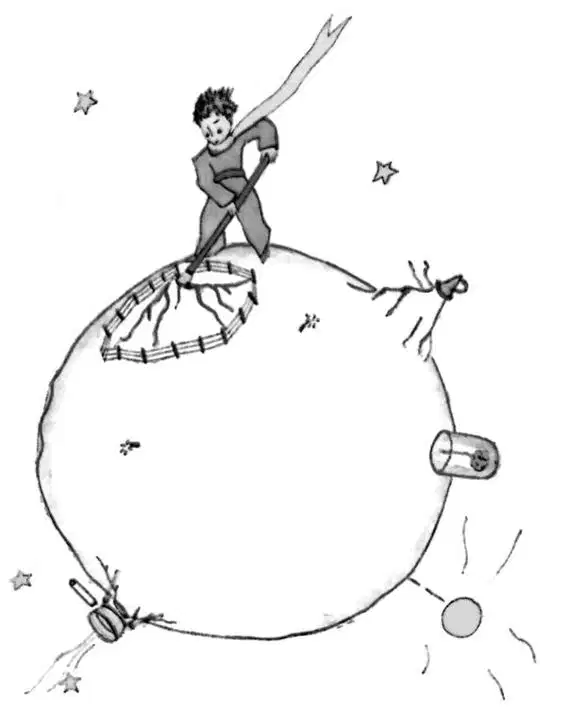

CHAPTER 9
第九章
—the little prince leaves his planet
——小王子离开他的星球
I believe that for his escape he took advantage of the migration of a flock of wild birds. On the morning of his departure he put his planet in perfect order. He carefully cleaned out his active volcanoes. He possessed two active volcanoes; and they were very convenient for heating his breakfast in the morning. He also had one volcano that was extinct. But, as he said, "One never knows!" So he cleaned out the extinct volcano, too. If they are well cleaned out, volcanoes burn slowly and steadily, without any eruptions. Volcanic eruptions are like fires in a chimney.
我认为他是借助一群迁徙的野生鸟类逃离的。在他启程的那天早上，他把星球的事务安排得井井有条。他精心打扫了他的活火山。他拥有两座活火山；早上用它们来热早餐很方便。他还有一座死火山。但是，正如他所说：“没人会知道！”所以他也打扫了那座死火山。如果打扫得好，火山就会慢慢地、稳定地燃烧，就不会喷出来。火山喷发就像烟囱里冒火一样。
On our earth we are obviously much too small to clean out our volcanoes. That is why they bring no end of trouble upon us.
显然，在我们地球上，我们人太小，不能打扫火山。这就是为什么他们接二连三地给我们找麻烦。
The little prince also pulled up, with a certain sense of dejection, the last little shoots of the baobabs. He believed that he would never want to return. But on this last morning all these familiar tasks seemed very precious to him. And when he watered the flower for the last time, and prepared to place her under the shelter of her glass globe, he realised that he was very close to tears.
小王子还很忧郁地把最后几棵猴面包树小树苗拔了。他想他再也不会回去了。可对他来说，这最后的早上，所有熟悉的工作似乎都变得珍贵起来。而当他最后一次给他的花儿浇水，准备把她放在她的玻璃罩下时，他发现自己几乎要流泪了。
"Goodbye," he said to the flower.
“再见吧。”他对他的花儿说。
But she made no answer.
可她却没有回答他。

"Goodbye," he said again.
“再见。”他又说了一遍。
The flower coughed. But it was not because she had a cold.
花咳嗽了一声。但这并不是因为她感冒了。
"I have been silly," she said to him, at last. "I ask your forgiveness. Try to be happy..."
“一直以来我都太傻了。”最后她对他说。“我请求你的原谅。你一定要幸福……”
He was surprised by this absence of reproaches. He stood there all bewildered, the glass globe held arrested in mid-air. He did not understand this quiet sweetness.
他很惊讶，她没有责备他。他站在那里，手里举着那个玻璃罩，完全不知所措。他不清楚她怎么会这么安静而温柔。
"Of course I love you," the flower said to him. "It is my fault that you have not known it all the while. That is of no importance. But you—you have been just as foolish as I. Try to be happy... let the glass globe be. I don't want it any more."
“我当然爱你。”花儿对他说道。“都是我不好，你一直都被蒙在鼓里。那不重要。可是你——你和我一样傻。试着快乐起来吧……不要管这个玻璃罩子了。我不再需要它了。”
"But the wind—”
“可是风——”
"My cold is not so bad as all that... the cool night air will do me good. I am a flower."
“我的感冒没那么严重，不像以前……晚上的凉空气对我有好处。我是一株花嘛。”
"But the animals—”
“可是那些动物——”
"Well, I must endure the presence of two or three caterpillars if I wish to become acquainted with the butterflies. It seems that they are very beautiful. And if not the butterflies—and the caterpillars—who will call upon me? You will be far away... as for the large animals—I am not at all afraid of any of them. I have my claws.”
“哦，如果我想要结识蝴蝶的话，我就必须得忍受两三只毛毛虫爬在我的身上。蝴蝶好像很漂亮。如果没有蝴蝶，没有毛毛虫，还会有谁来看我呢？你会在很远很远的地方……至于那些大动物——我一点也不怕他们。我有我自己的爪子。”
And, naively, she showed her four thorns. Then she added:
她很天真地展示了她的四根刺。然后又接着说：
"Don't linger like this. You have decided to go away. Now go!"
“不要再这样磨蹭下去了。你已经下决心离开了。现在就走吧！”
For she did not want him to see her crying. She was such a proud flower...
她是不想让小王子看到她在哭。她是这样一朵骄傲的花……